2023-03-10 Global and Piecewise Interpolation#
Last time#
Interpolation using polynomials
Structure of generalized Vandermonde matrices
Conditioning of interpolation and Vandermonde matrices
Choice of points and choice of basis
Today#
Runge phenomenon as ill conditioning
Stability and Chebyshev polynomials
Piecewise methods
using LinearAlgebra
using Plots
default(linewidth=4, legendfontsize=12)
function vander(x, k=nothing)
if isnothing(k)
k = length(x)
end
m = length(x)
V = ones(m, k)
for j in 2:k
V[:, j] = V[:, j-1] .* x
end
V
end
function vander_newton(x, abscissa=nothing)
if isnothing(abscissa)
abscissa = x
end
n = length(abscissa)
A = ones(length(x), n)
for i in 2:n
A[:,i] = A[:,i-1] .* (x .- abscissa[i-1])
end
A
end
CosRange(a, b, n) = (a + b)/2 .+ (b - a)/2 * cos.(LinRange(-pi, 0, n))
CosRange (generic function with 1 method)
A well-conditioned polynomial basis#
function vander_legendre(x, k=nothing)
if isnothing(k)
k = length(x) # Square by default
end
m = length(x)
Q = ones(m, k)
Q[:, 2] = x
for n in 1:k-2
Q[:, n+2] = ((2*n + 1) * x .* Q[:, n+1] - n * Q[:, n]) / (n + 1)
end
Q
end
vander_legendre (generic function with 2 methods)
vcond(mat, points, nmax) = [cond(mat(points(-1, 1, n))) for n in 2:nmax]
plot([vcond(vander_legendre, CosRange, 20)], yscale=:log10)
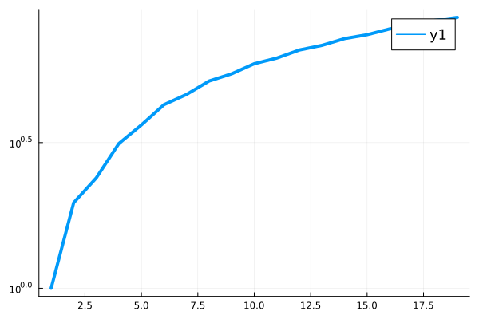
A different set of points#
CosRange(a, b, n) = (a + b)/2 .+ (b - a)/2 * cos.(LinRange(-pi, 0, n))
plot([vcond(vander, LinRange, 20)], yscale=:log10, size=(1000, 600))
plot!([vcond(vander, CosRange, 20)], yscale=:log10)
plot!([vcond(vander_legendre, LinRange, 20)], yscale=:log10)
plot!([vcond(vander_legendre, CosRange, 20)], yscale=:log10)
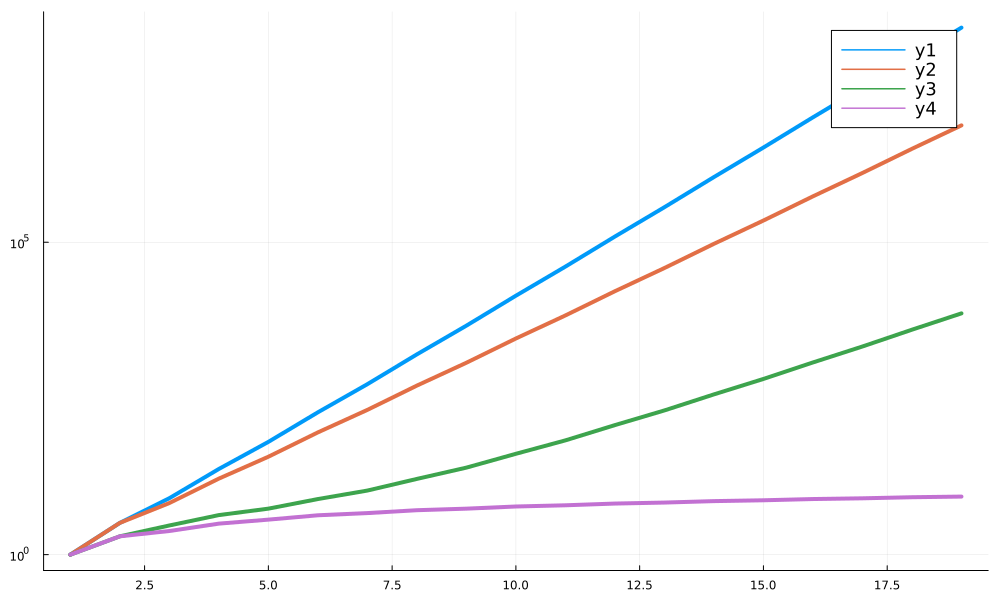
What’s wrong with ill-conditioning?#
runge(x) = 1 / (1 + 10*x^2)
x = CosRange(-1, 1, 20) # try CosRange
y = runge.(x)
plot(runge, xlims=(-1, 1))
scatter!(x, y)
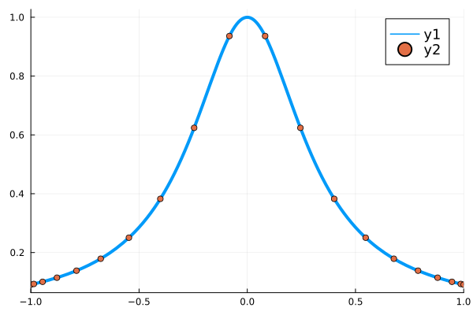
ourvander = vander_legendre # try vander_legendre
p = ourvander(x) \ y;
scatter(x, y)
s = LinRange(-1, 1, 100)
plot!(s, runge.(s))
plot!(s, ourvander(s, length(x)) * p)
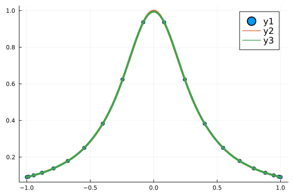
svdvals(ourvander(s, length(x)) / ourvander(x))
20-element Vector{Float64}:
2.8563807370813312
2.8414668608815545
2.8202363866684848
2.782971972925489
2.7474280450222013
2.6846513464302877
2.6367813664121758
2.545083971162912
2.486134057068077
2.3619485533713127
2.291618416490511
2.1320708818800695
2.046030538935147
1.8547347714535942
1.734750748839897
1.5501994693431667
1.3481998183116581
1.251907352767407
0.946254637146537
0.9419175178348705
cond(ourvander(x))
8.502660254099553
Chebyshev polynomials#
Define
\[ T_n(x) = \cos (n \arccos(x)) .\]
This turns out to be a polynomial, but it’s not obvious why.
Recall
\[ \cos(a + b) = \cos a \cos b - \sin a \sin b .\]
Let \(y = \arccos x\) and check
\[\begin{split} \begin{split}
T_{n+1}(x) &= \cos \big( (n+1) y \big) = \cos ny \cos y - \sin ny \sin y \\
T_{n-1}(x) &= \cos \big( (n-1) y \big) = \cos ny \cos y + \sin ny \sin y
\end{split}\end{split}\]
Adding these together produces
\[ T_{n+1}(x) + T_{n-1}(x) = 2\cos ny \cos y = 2 x \cos ny = 2 x T_n(x) \]
which yields a convenient recurrence:
\[\begin{split}\begin{split}
T_0(x) &= 1 \\
T_1(x) &= x \\
T_{n+1}(x) &= 2 x T_n(x) - T_{n-1}(x)
\end{split}\end{split}\]
Chebyshev polynomials#
\[\begin{split}\begin{split}
T_0(x) &= 1 \\
T_1(x) &= x \\
T_{n+1}(x) &= 2 x T_n(x) - T_{n-1}(x)
\end{split}\end{split}\]
function vander_chebyshev(x, n=nothing)
if isnothing(n)
n = length(x) # Square by default
end
m = length(x)
T = ones(m, n)
if n > 1
T[:, 2] = x
end
for k in 3:n
T[:, k] = 2 * x .* T[:,k-1] - T[:, k-2]
end
T
end
vander_chebyshev (generic function with 2 methods)
x = LinRange(-1, 1, 50)
plot(x, vander_chebyshev(x, 5), title="Chebyshev polynomials")
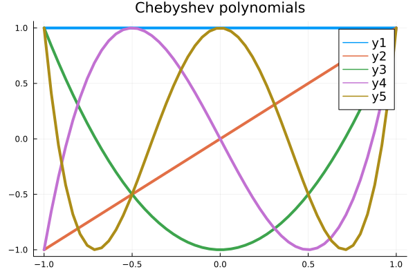
Chebyshev polynomials are well-conditioned#
plot_vcond(mat, points) = plot!([
cond(mat(points(-1, 1, n)))
for n in 2:30], label="$mat/$points", marker=:auto, yscale=:log10)
plot(title="Vandermonde condition numbers", legend=:topleft, size=(1000, 600))
plot_vcond(vander, LinRange)
plot_vcond(vander, CosRange)
plot_vcond(vander_chebyshev, LinRange)
plot_vcond(vander_chebyshev, CosRange)
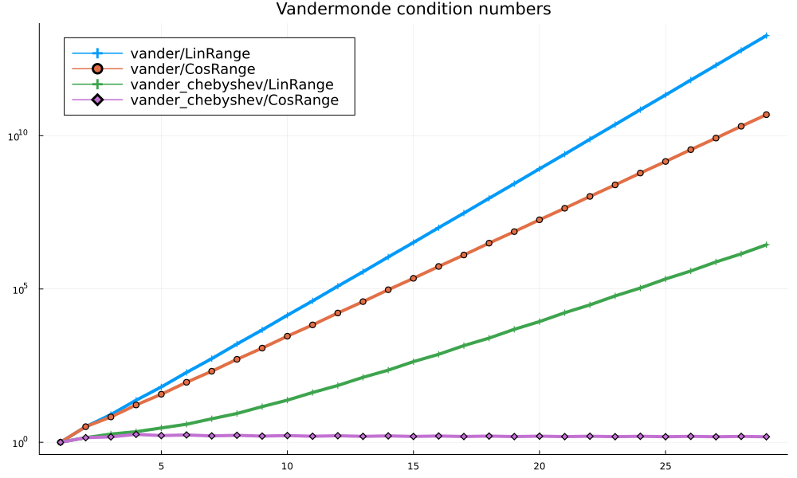
Lagrange interpolating polynomials revisited#
Let’s re-examine the Lagrange polynomials as we vary the points.
x = CosRange(-1, 1, 11) # CosRange?
s = LinRange(-1, 1, 100)
A = vander_chebyshev(s, length(x)) /
vander_chebyshev(x)
plot(s, A[:,1:5], size=(1000, 600))
scatter!(x[1:5], ones(5), color=:black, label=nothing)
scatter!(x, zero(x), color=:black, label=nothing)
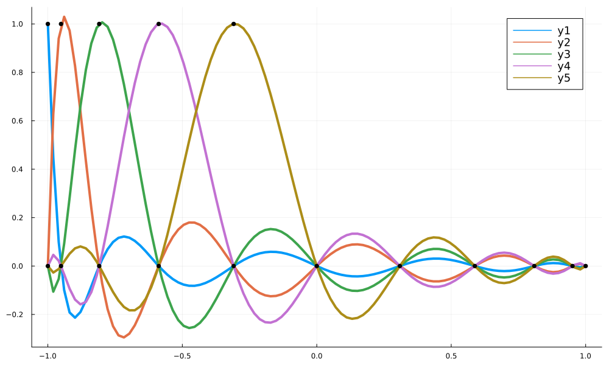
y = abs.(x)
plot(s, [abs.(s) A * y])
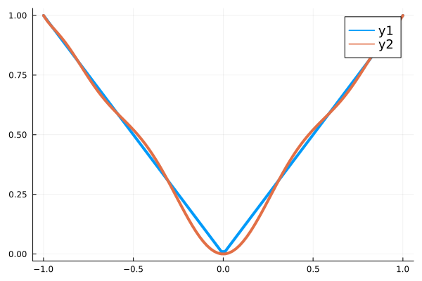
Are there artifacts?
Piecewise interpolation#
function interp_nearest(x, s)
A = zeros(length(s), length(x))
for (i, t) in enumerate(s)
loc = nothing
dist = Inf
for (j, u) in enumerate(x)
if abs(t - u) < dist
loc = j
dist = abs(t - u)
end
end
A[i, loc] = 1
end
A
end
interp_nearest(LinRange(-1, 1, 3), LinRange(0, 1, 4))
4×3 Matrix{Float64}:
0.0 1.0 0.0
0.0 1.0 0.0
0.0 0.0 1.0
0.0 0.0 1.0
A = interp_nearest(x, s)
plot(s, A[:, 1:5])
scatter!(x, ones(length(x)))
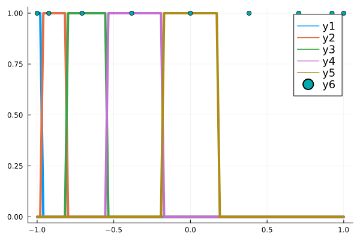
I don’t see any visual artifacts#
x = LinRange(-1, 1, 40)
A = interp_nearest(x, s)
cond(A)
1.224744871391589
plot(s, A * runge.(x))
plot!(s, runge.(s))
scatter!(x, runge.(x))
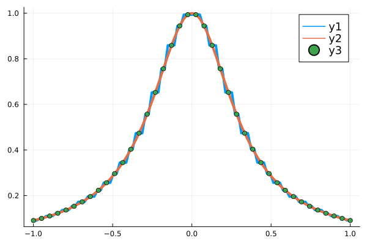
function interp_chebyshev(x, xx)
vander_chebyshev(xx, length(x)) * inv(vander_chebyshev(x))
end
function interp_monomial(x, xx)
vander(xx, length(x)) * inv(vander(x))
end
function interp_error(ieval, x, xx, test)
"""Compute norm of interpolation error for function test
using method interp_and_eval from points x to points xx.
"""
A = ieval(x, xx)
y = test.(x)
yy = test.(xx)
norm(A * y - yy, Inf)
end
function plot_convergence(ievals, ptspaces; xscale=:log10, yscale=:log10, maxpts=40)
"""Plot convergence rates for an interpolation scheme applied
to a set of tests.
"""
xx = LinRange(-1, 1, 100)
ns = 2:maxpts
fig = plot(title="Convergence",
xlabel="Number of points",
ylabel="Interpolation error",
xscale=xscale,
yscale=yscale,
legend=:bottomleft,
size=(1000, 700))
for ieval in ievals
for ptspace in ptspaces
for test in [runge]
errors = [interp_error(ieval, ptspace(-1, 1, n), xx, test)
for n in ns]
plot!(ns, errors, marker=:circle, label="$ieval/$ptspace")
end
end
end
for k in [1, 2, 3]
plot!(ns, ns .^ (-1.0*k), color=:black, label="\$n^{-$k}\$")
end
fig
end
plot_convergence (generic function with 1 method)
So maybe it’s not that accurate?#
plot_convergence([interp_monomial, interp_chebyshev, interp_nearest], [LinRange, CosRange])
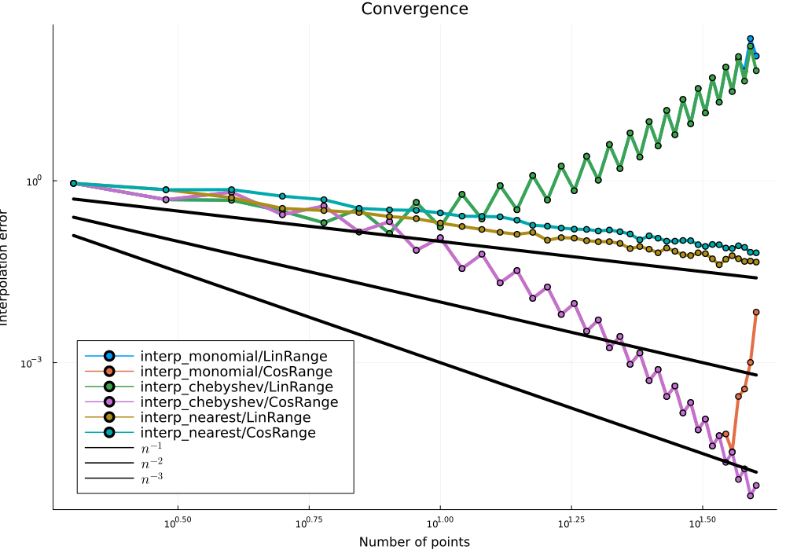